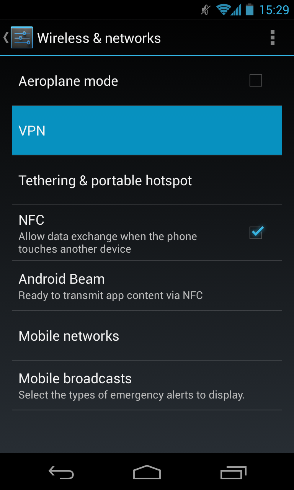
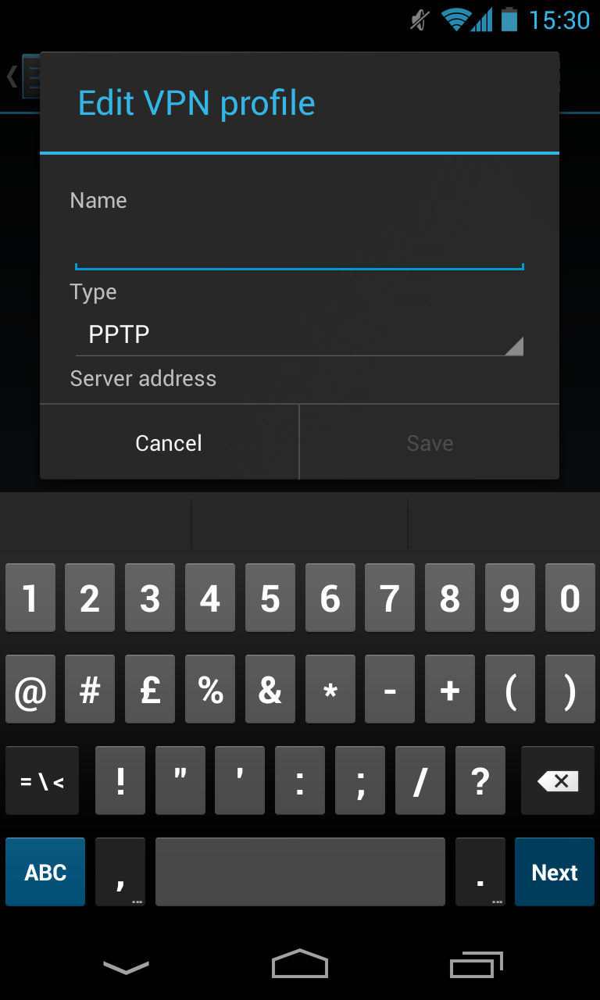
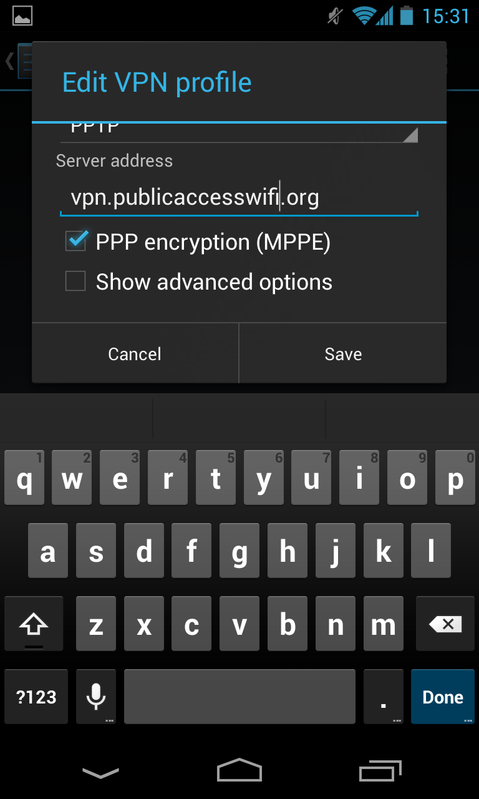

(1) Go to Menu > Settings > More..
If you are not a registered PAWS user, then visit www.publicaccesswifi.org/take-part/ to sign up. If you are a registered user, who has forgotten there password then request a new one
(2) Go to VPN and create new
Follow the instructions for your specific device, from the Get Connected menu at the top of the page
(3) Enter Name & Server Address
Enable your device to use PAWS, as explained in the get connected section and begin browsing, here is a selection of useful sites to get you started
(4) Save the Setup & Connect to PAWS WiFi

Enable your device to use PAWS, as explained in the get connected section and begin browsing, here is a selection of useful sites to get you started